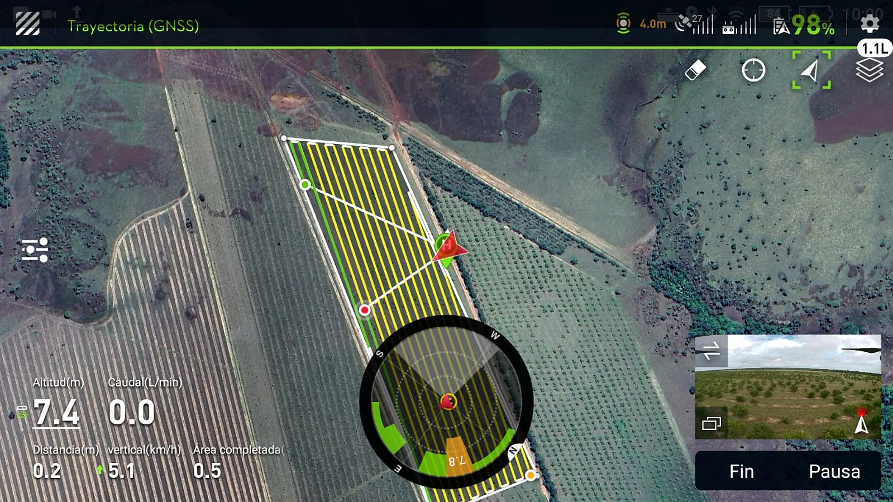
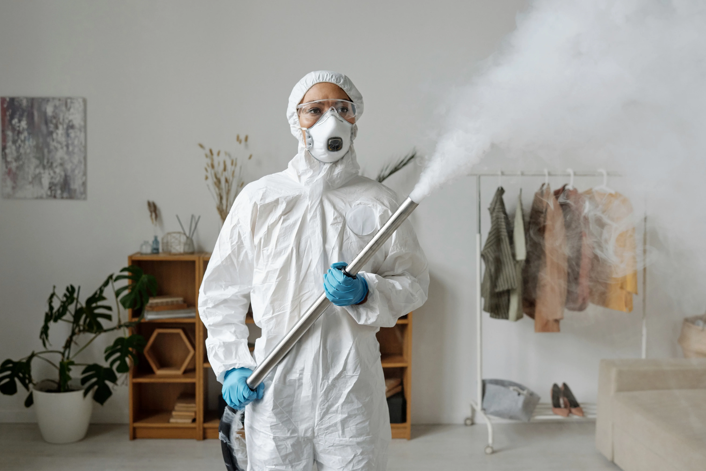
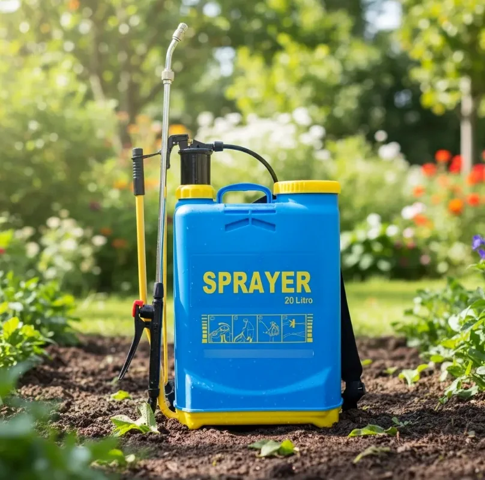
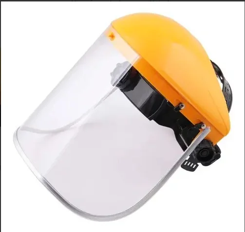
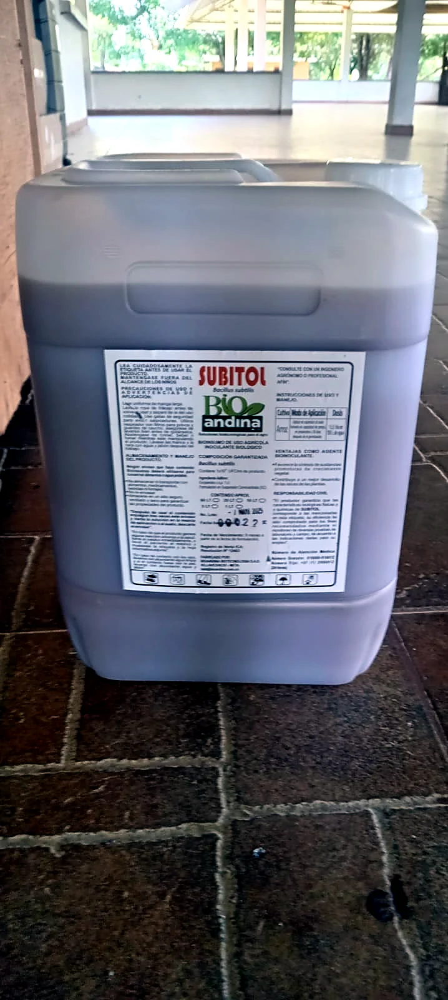
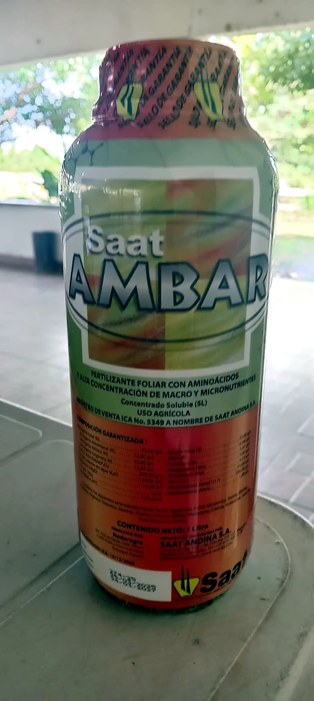
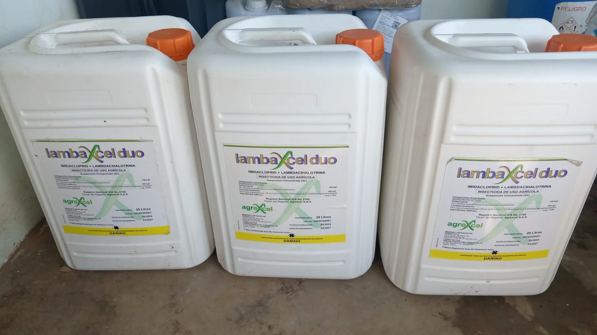

01
Fumigación y control de plagas
Servicios orientados al control y erradicación de plagas en diferentes tipos de espacios.
Consultar servicioControl de plagas con insumos biológicos
Fumigación, desratización, desinfección y saneamiento ambiental para espacios residenciales, comerciales e industriales.
FumiGo+ S.A.S.
Brindamos servicios de fumigación, control y erradicación de plagas, desratización, desinfección y saneamiento ambiental. También comercializamos insumos, equipos y productos relacionados con el control de plagas y el aseo.
Explorar solucionesControl de plagas con insumos biológicos.
FG+ / 01Lo que hacemos
Servicios y productos para acompañar el cuidado de espacios residenciales, comerciales, industriales y otros entornos.
Servicios orientados al control y erradicación de plagas en diferentes tipos de espacios.
Consultar servicioAlternativas para atender la presencia de roedores y cuidar las condiciones del lugar.
Consultar servicioApoyo a las necesidades de desinfección y saneamiento ambiental en distintos entornos.
Consultar servicioCompra, venta, importación, distribución y comercialización de productos relacionados con control de plagas y aseo.
Agricultura y territorio
Integramos recorridos de campo con imágenes satelitales para observar la cobertura vegetal y sus variaciones. El análisis NDVI puede organizarse por parcela y, en contextos urbanos, por la unidad territorial que aplique en cada municipio.
El NDVI ayuda a observar cambios en la vegetación; no identifica plagas por sí solo. La interpretación se complementa con información y verificación en campo.




Aplicación responsable
La selección de bomba, boquilla, calibración y elementos de protección personal depende del trabajo y del producto autorizado. Guantes, protección respiratoria, ocular y facial se definen según la etiqueta, la ficha de seguridad y la evaluación de riesgo. Las fotos son ilustrativas, no corresponden a personal de FumiGo.
Foto referencial: Michelangelo Buonarroti · Pexels ↗Insumos agrícolas
Algunos insumos compartidos por FumiGo. La recomendación y el uso dependen del cultivo, la etiqueta y el registro vigente.

Producto agrícola identificado en su etiqueta con Bacillus subtilis. Su manejo debe seguir las instrucciones y usos autorizados del fabricante.

La etiqueta lo describe como fertilizante foliar con aminoácidos y aporte de macro y micronutrientes.

La etiqueta visible reporta imidacloprid y lambdacialotrina. Debe utilizarse únicamente conforme al registro, cultivo y condiciones autorizadas.
La línea agrícola se presenta por separado de los servicios de saneamiento ambiental. Todo producto requiere revisar etiqueta, registro ICA vigente y ficha de seguridad antes de recomendarlo o aplicarlo.
Dónde acompañamos
Atendemos necesidades de control de plagas y saneamiento en diferentes tipos de lugares y actividades.
Líbano, Tolima · Colombia
Cuéntanos qué necesitas. Estamos disponibles por WhatsApp, teléfono y correo.